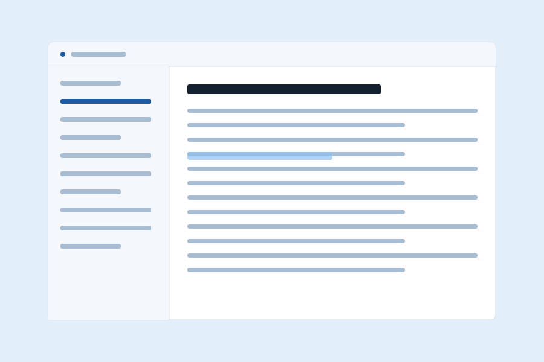
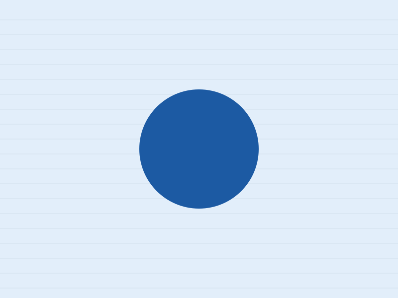
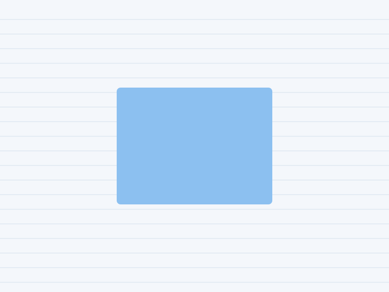
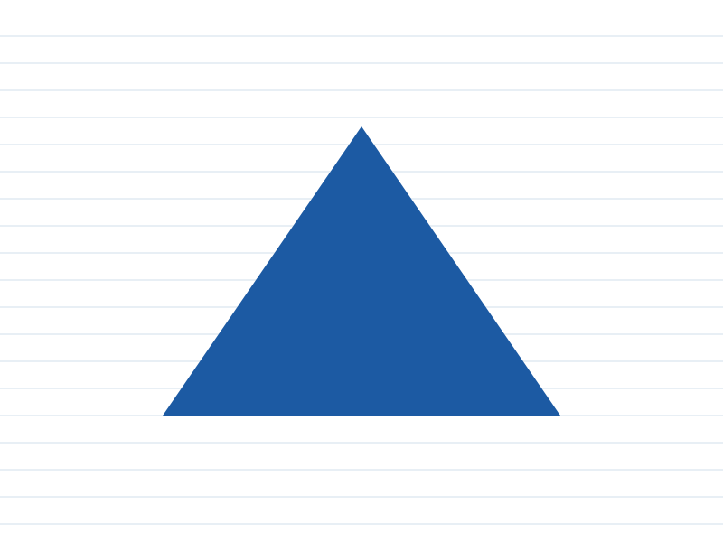
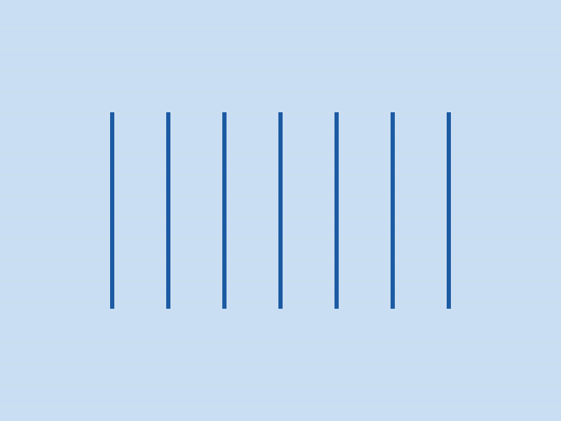
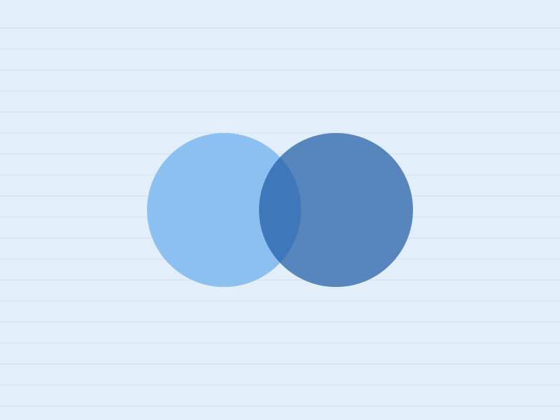
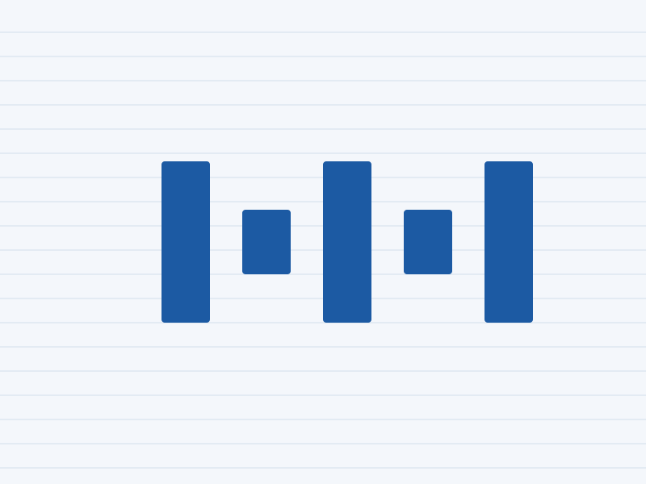
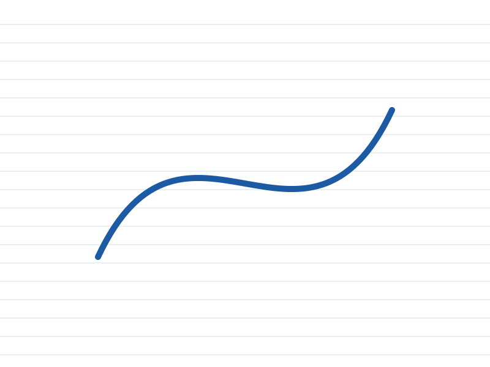
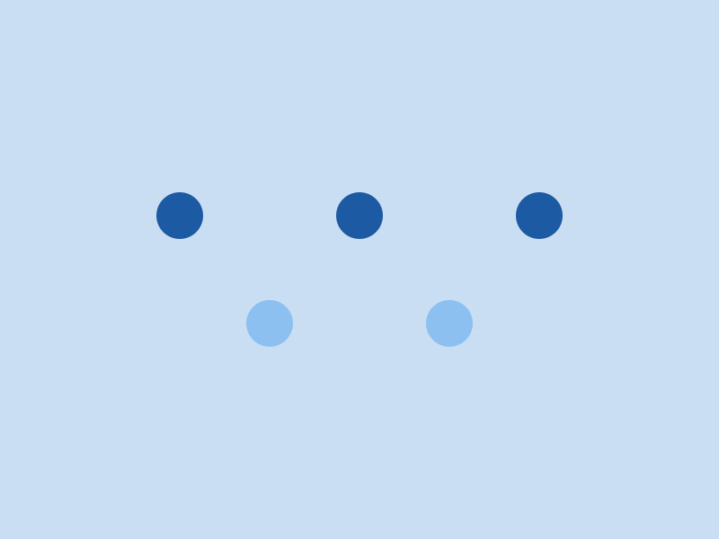

Frost where content passes under
The navbar, the docs top bar, the note toolbar, dialogs and open menus blur what is behind them at 8px. Nothing else does.
Near-white with a cast of ice, hairlines instead of shadows, one deep blue for the things you can click. Frost appears only where content scrolls under something: the bar above you, a dialog, a menu. Same markup as every other template here.
Frost is a translucent fill and a low blur. It tells you something is above the page rather than on it.
Scroll this note. The toolbar stays, and the lines pass under it.
Every colour is a token, so the ice turns to slate when the scheme does. The lines on this sheet are one hairline colour repeated.
The type is Geist at 16px, semibold for headings with the tracking pulled in, mono for anything that is a label rather than a sentence.
The ledger is the template's own grid: cards that share their hairlines, with no gaps and no radius on the cells. Use it when the cards are a set and should read as one object.
The navbar, the docs top bar, the note toolbar, dialogs and open menus blur what is behind them at 8px. Nothing else does.
Every edge is one pixel of icy blue. Sections are ruled off from each other; cards, tables and fields share the same line. Shadows are kept for the two things that float.
Pale tints are surfaces and lines. One deep cold blue carries links, focus and the primary button, and passes 4.5:1 in both schemes. In the dark it turns to ice on slate.
The example is Sheaf, a notes app: a home page, a features page and a pricing page. The hero on its home page is a note, because the app is the point, and the plans are a table because prices are a table.

Fifty-fifty
The block gives an image half the width and the text the other half, divided by a rule. Add fifty-fifty-reverse and the picture moves right. On a phone the picture comes first either way.
Every surface that blurs, and the ones that were tempted and did not. Tables sit in a wrapper that scrolls sideways when they are wider than the page; the head row is set in mono.
| Surface | Frost | Blur | Why |
|---|---|---|---|
| Navbar and top bar | yes | 8px | Content scrolls under it |
| Dialog and lightbox controls | yes | 8px | Sits over the page |
| Mobile menu and sidebar drawer | yes | 8px | Opens over the page |
| Feature card picture | until hover | 8px to 0 | The one effect |
| Cards, tables, fields, footer | no | none | They are the page |
Outside a ledger a card keeps its own hairline and a 6px radius. Horizontal cards put the media on the left or, with card-media-end, on the right, with a rule between media and body.

The image takes a little over a third of the width and the text takes the rest.

The same card with the order flipped. The markup is the same; only one class differs.
Every template has one feature card with an effect of its own. This one's picture sits under a pane of frost. Hover it, or tab to the button inside it, and the frost clears.

A pseudo-element over the picture carries the same fill and blur as the navbar. On hover the blur goes to zero and the fill fades. Nothing moves, and under reduced motion the change is instant.
Eight ruled sheets, each with one mark. Click any. The lightbox is a <dialog>; the arrows and the close button are frosted, and Esc closes it.








Buttons are small type on a hairline; the quiet one has no border until you hover. A switch is a checkbox with role="switch". Badges are mono labels with square corners.
Dialogs are native. The button opens one on frost over the page; the dialog closes itself through a form.
Accordions are native <details>. Give a group one name and opening one closes the others, with no script. With modern-frosty-lines the group loses its box and keeps only the rules between items.
Because frost means depth, and a page with depth everywhere has none. The blur is spent on the few things that sit above the page, so that when you see it you know what it means.
No. It is a deep slate blue, and the hairlines and the accent turn to ice. The checker measures text on the ground and the accent on the ground in both halves; both clear 4.5:1.
About forty lines for the scheme toggle, and a one-line onclick on anything that opens a dialog. Everything else is HTML and CSS.
A single accordion stands on its own, boxed.
css/, js/theme.js, assets/ and this folder's README.md. There is no fonts/ folder unless you self-host the two faces.
Prose is what most pages are made of, so .prose styles every construct a markdown renderer produces: headings, lists, quotes, code, tables, footnotes. The blog post runs the full test document through it; defaults shows every bare element.
A template is a promise about what markup will look like. The contract is that promise written down.